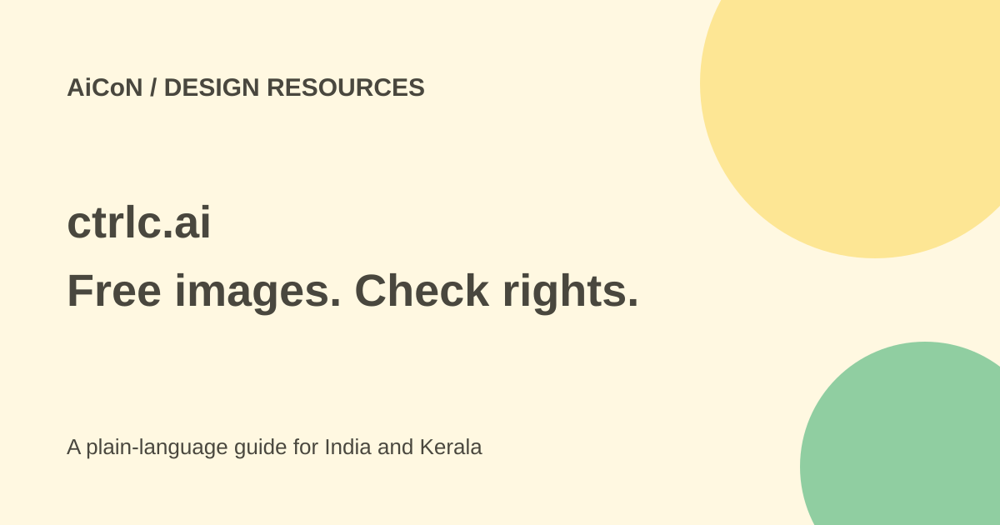

ctrlc.ai: free image references, prompts and CC0 limits
ctrlc.ai is a gallery of AI-generated image references with prompts. Its gallery images are dedicated under CC0 1.0 where the law permits. That allows reuse, but does not erase rights involving real people, brands or source material.

What can you use it for?
A reference image helps you describe the style, layout or mood you want. The gallery includes subjects such as architecture, fashion, packaging, branding and typography. You can look at examples and adapt a prompt for your own image tool.
A copied prompt is not a guarantee of the same result. Models, settings, reference images and random variation affect the output. A generated product label or logo can also look convincing while being inaccurate.
What the CC0 page actually permits
The official licence dedicates images published in the gallery to the public domain under CC0 1.0 Universal, to the extent permitted by law. It permits downloading, copying, modifying, remixing and distributing images for commercial and non-commercial purposes. It says permission and attribution are not required, although credit is appreciated.
That dedication applies to the images, not the site's name, branding, website, database or interface. It does not waive trademark, privacy, publicity or other rights involving people, brands or source material. Do not imply the gallery or a creator endorses your business.
How to use a reference carefully
- Open the official gallery and find a suitable image. Use a subject and layout relevant to the project rather than copying whatever looks impressive.
- Read the image details and prompt if shown. Check whether the image is part of the public gallery covered by the licence.
- Download through the site's actual controls. Keep the source and licence note with your project so you can explain where the image came from.
- If copying a prompt, use an image service you intend to use and check its cost and terms. A free reference does not make that generation service free.
- Inspect any logos, labels, recognisable faces or artwork. Use a different reference or seek permission when another person's rights are involved.
- For a product advertisement, compare the image with the real product. Do not present a fictional label, material or feature as an accurate customer promise.
- Review the final crop, text and quality on a phone before publishing.
Free, sign-in and practical limits
The licence permits free downloads and use of gallery images. The original post said browsing, prompt copying and downloads needed no sign-in, while collections and private references used an account. This review saw the public gallery and a sign-in option but did not test every download, upload or account control.
No paid gallery price was established here. If you use another AI generator, its model calls or subscription can cost money. Check that service separately. Do not assume signing in gives private uploads the same public-gallery licence.
For Kerala and Indian creators
A student can use a reference to explore poster styles. A shop can compare packaging concepts before hiring a designer. Keep the reference distinct from a real product photograph and verify all words on a generated label.
Do not upload private client assets or images of people without permission. Public-domain wording is not a privacy promise for your own uploads. Read current account and upload terms before adding sensitive files.
What changed since the original post?
The current licence supports the CC0 and commercial-reuse description, with explicit third-party-rights limits. This guide does not claim that every account feature or download flow was tested. No image was generated, uploaded or published.
Frequently asked questions
Must I give credit?
The gallery licence says attribution is not required for covered images, though credit is appreciated.
Can I use any visible brand?
CC0 does not waive trademark or other third-party rights. Check the intended use.
Will copying the prompt reproduce the image?
Not necessarily. The model and settings can change the result.
Are private uploads automatically CC0?
That was not verified. Read the upload and account terms.
Sources: Official gallery · Official gallery licence. Checked 7 October 2026.